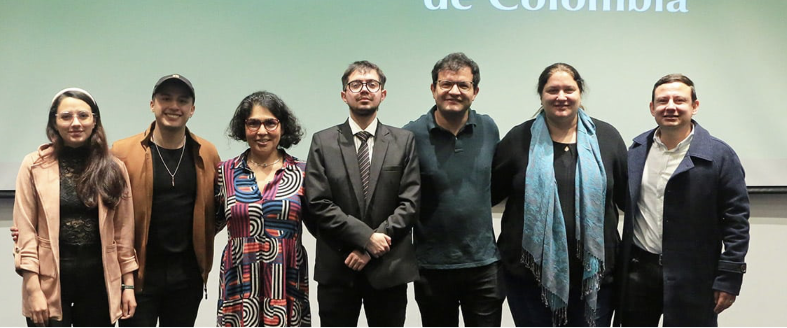
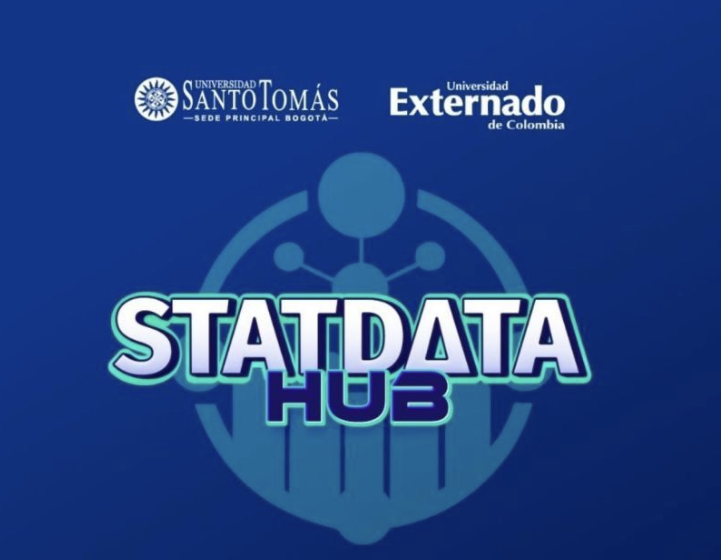
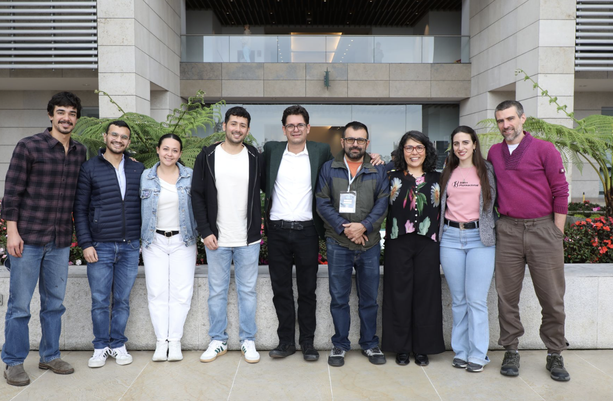
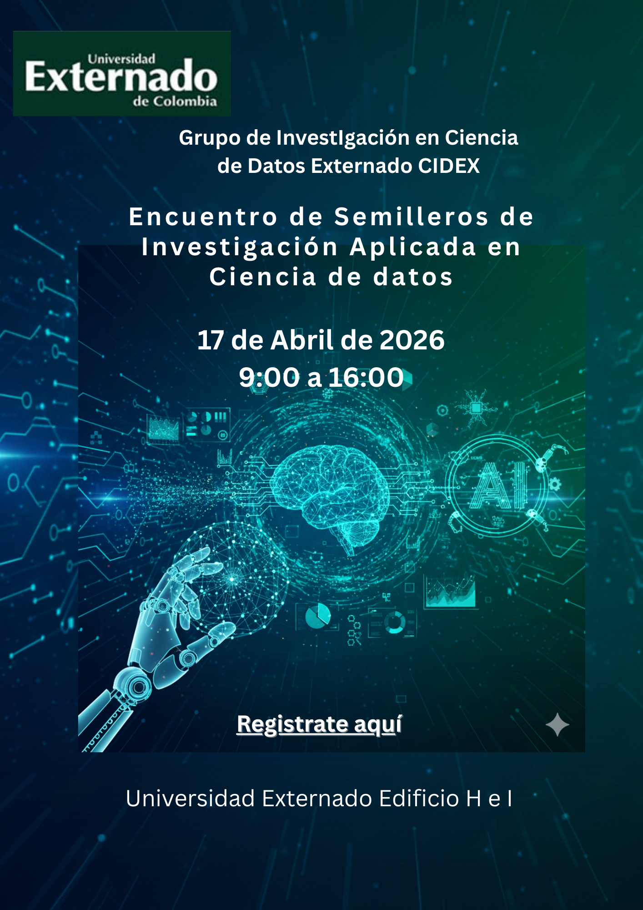

About
Andrés Martínez is a finance and economics scholar with advanced training in stochastic engineering and management research. He serves as a full-time research professor in the undergraduate Data Science program at the Department of Mathematics, Universidad Externado de Colombia.
He holds an M.Sc. in Stochastic Engineering from Munich University of Applied Sciences, Germany, and a doctorate in Management from Universidad de los Andes. His academic work bridges quantitative finance and data science, with a focus on asset pricing, Bayesian statistics, risk modeling, blockchain, financial derivatives, and computational approaches for decision-making under uncertainty.
In addition to his undergraduate teaching, he currently teaches Bayesian Statistics, Bayesian Statistics for Machine Learning, and Asset Pricing. He also coordinates executive education initiatives and works on building research narratives that combine rigorous modeling, behavioral interpretation, and visual storytelling.
Academic Background
Universidad de los Andes
Munich University of Applied Sciences, Germany
Undergraduate programm with training grounded in quantitative methods, economic analysis, and financial decision-making.
Research
My research agenda develops statistical and economic tools to understand how prices are formed when markets are volatile, information is heterogeneous, and investor behavior matters.
Asset Pricing
I study price formation in traditional and emerging markets using stochastic volatility models, risk-factor approaches, and market microstructure perspectives. A central line of my research examines how volatility dynamics, exposure to risk, and uncertainty shape observed prices.
Behavioral Finance
I analyze how information cascades, herding behavior, speculative expectations, and sentiment affect trading decisions and price dynamics. This perspective is especially relevant in markets where institutional anchors are weak and beliefs play a stronger role.
Bayesian Statistics & Data Science
I use Bayesian hierarchical models, causal inference, stochastic processes, nonparametric methods, and machine learning tools to estimate risk, forecast returns, quantify uncertainty, and identify hidden structures in financial data.
Current Research Themes
- Price formation under uncertainty
- Volatility, noise, and market structure
- Herding behavior and information transmission
- Bayesian modeling for risk and return prediction
- Visual storytelling for financial research
Research Keywords
Selected Publications & Talks
A selection of publications and presentations reflecting my work in quantitative finance, cryptocurrency markets, and stochastic modeling.
Relevancia del patrón de persistencia de Hurst en la gestión de portafolios de renta variable
Revista de Métodos Cuantitativos para la Economía y la Empresa, 32, 66–82 (2021).
Pronóstico de un Título de Renta Fija en Colombia
Research publication in quantitative fixed-income forecasting (2016).
Structure of the Crypto-Asset Market: A Non-Parametric Bayesian Approach
Presented at Bayes Plurinacional, Salta, Argentina (2024).
Volatility Models for Currencies Returns in Latin America
Presented at Congreso Redradar, Buenos Aires, Argentina (2020).
Allocation of Fixed Income Instruments Using a Multivariate Model in the Colombian Market
Presented at IX Congreso de Investigación Financiera, Monterrey, Mexico (2018).
Teaching
My teaching integrates theory, computation, and real-world problem solving. I aim to help students build strong quantitative foundations while understanding how models inform decisions under uncertainty.
I teach undergraduate and graduate courses in data science, finance, and applied statistics. My courses combine mathematical rigor, computational tools, and economic interpretation, with a particular focus on risk, prediction, and decision-making in complex environments.
I have also taught at the MBA level, delivering courses in Data Science and Machine Learning and Data Science for Financial Management, where the emphasis is placed on translating quantitative models into strategic and managerial decisions. This experience has strengthened my focus on connecting technical frameworks with real-world applications in business and financial contexts.
Across all levels, I emphasize connecting models to institutional and market environments, enabling students to move from technical results to meaningful insights.
Teaching Philosophy
I believe that in quantitative disciplines, stories matter as much as data. Models and results are not ends in themselves, but tools to construct, test, and communicate ideas about how markets and economic systems behave.
My teaching therefore focuses on conceptual clarity, reproducibility, and meaningful interpretation, ensuring that every model is grounded in real institutional settings and contributes to a broader narrative about decision-making under uncertainty.
Courses
Courses taught across undergraduate, graduate, and executive-level contexts, including MBA and Master's programs in Smart Cities.
At the graduate and executive level, I teach Machine Learning with a managerial focus, emphasizing how Key Performance Indicators (KPIs) can be used to identify organizational needs and guide the application of data science models. The objective is to transform data into actionable information that supports strategic decision-making in complex environments.
Bayesian Statistics for Machine Learning
Bayesian inference, model comparison, hierarchical structures, and computational methods for machine learning applications.
Bayesian Statistics
Probability modeling, posterior inference, uncertainty quantification, and Bayesian decision-making.
Asset Pricing
Valuation frameworks, risk-return relationships, stochastic finance, and market-based approaches to financial decision-making.
Data Science for Financial Administration
Analytical tools, data-driven decision-making, and quantitative applications for financial management.
Machine Learning for Management (MBA & Smart Cities)
Application of machine learning models in managerial contexts, focusing on KPI-driven decision-making, organizational diagnostics, and the translation of data into strategic insights.
Stochastic Calculus and Finance
Advanced applications in asset pricing, derivatives, and risk measurement.
Blockchain and Financial Innovation
Markets, protocols, valuation challenges, and the role of decentralized systems.
Projects, Leadership & Academic Service
Research leadership, consulting, and interdisciplinary collaboration are central to my academic work.
Lead, Data Science Research Group
Coordination of research activities, project development, and academic initiatives in data science and quantitative methods.
Executive Education and Extension Coordination
Academic coordination of executive education and extension-based courses developed by the Department of Mathematics.
Financial Data Visualization and Pattern Detection
Participation in consulting and research projects focused on visualization processes for identifying patterns in financial data.
Research Storytelling and Animated Explanations
Development of visual and animated narratives to communicate price formation, volatility, and investor behavior.
Academic Events
I have contributed to the organization of academic events that strengthen research communities, foster interdisciplinary collaboration, and promote data science as a shared space for inquiry, dialogue, and applied knowledge.
First Data Science Meeting
Organized at Universidad Externado de Colombia within the undergraduate Data Science program, this event helped consolidate an emerging academic community around data analysis, quantitative thinking, and interdisciplinary applications. It served as an early institutional space to connect students, faculty, and research interests in the field.


StatDataHUB
Developed at Universidad Externado de Colombia in collaboration with Universidad Santo Tomás, StatDataHUB created a space for dialogue between statistics, data science, and applied research. The event promoted collaboration across institutions and encouraged the exchange of methodological and practical perspectives in contemporary data-driven research.
MeetUP Bayes-IA-ML
This collaborative event brought together Universidad de La Sabana, Universidad del Rosario, Universidad de La Salle, Escuela de Ingeniería de Antioquia, and the Bayes Plurinacional Community. It was designed as a meeting point for Bayesian statistics, artificial intelligence, and machine learning, strengthening research networks and promoting academic exchange across institutions.


Encuentro de Semilleros de Investigación Aplicado a Ciencia de Datos
Organized at Universidad Externado de Colombia, this event focuses on strengthening student research, showcasing early-stage projects, and encouraging the use of data science in applied research contexts. It reflects an institutional commitment to research training, academic community building, and the development of new generations of researchers.
Contact
I welcome academic collaborations, research conversations, and opportunities related to data science, finance, and Bayesian modeling.
manuel.martinez@uexternado.edu.co
investigacioncienciadedatos@uexternado.edu.co
ma.martinezp12@uniandes.edu.co
Professional Profiles
Institution
Department of Mathematics, Universidad Externado de Colombia, Bogotá.